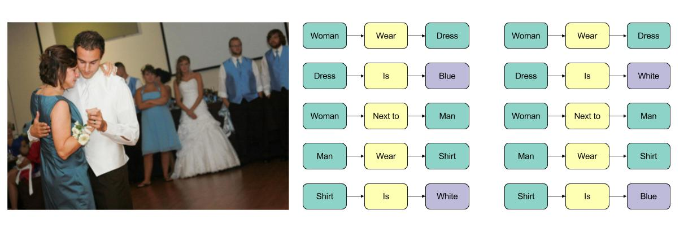
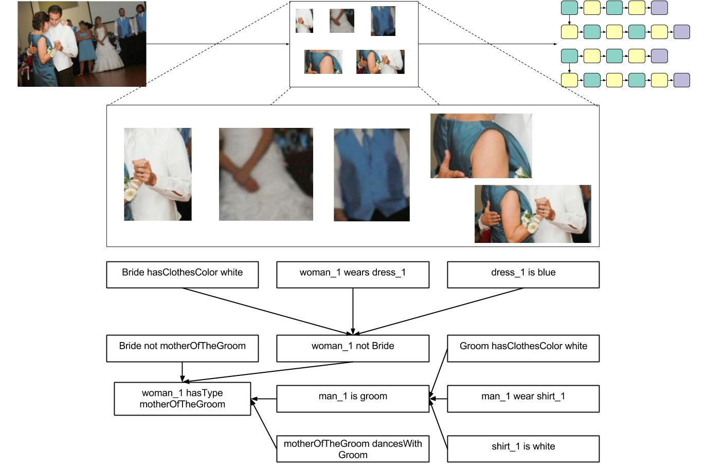

Bridging the Gap Between Perception and Reasoning in Computer Vision
Matt Klawonn
Advisor: James Hendler
Information Retrieval from Images

Image courtesy of Business Insider
Current Image Processing Tasks
Object Detection
Detect the objects, potentially with bounding boxes.
Image Captioning
Produce a natural language description of the image.
Visual Question Answering
Answer a natural language question about the image, using natural language.
Image courtesy of WCWD
Perception vs Reasoning
Perception
Extract information immediately available from the image.
Example: What are the people doing?
Reasoning
Extract information available through logical techniques.
Who is the mother of the groom?
Image courtesy of WCWD
Bridging the Gap
Proposal
In this work, I define necessary conditions for an image representation generated by a perceptual model to be used by a reasoning system. My work proposes to learn perceptual models for the purpose of extracting information from images, while also yielding outputs suitable to be used with reasoning technologies.
Graph Structured Representation
stokman1988 argues for the structuring of knowledge in graph form for the following reasons, and thus I adopt this approach.
- Ease of Representation
- Clear Structure
- Access to Graph Theoretical Tools
Provenance Included
Prior work (e.g cite mcguinness, cite lime) argues that trust is critical for the deployment of perceptual and reasoning models alike. As such I propose to build on previous work in machine learning explainability to capture an increased amount of provenance for a perceptual model's prediction.
Talk Overview
- Scene Graph Generation
- Outline of Task
- Previous Work and Problems
- More Flexible Approach
- Future Improvements
- Provenance Generation
- ML and Explainability
- Issues with Prior Approaches
- Proof of Concept New Approach
- Discussion and Summary
Talk Overview
- Scene Graph Generation
- Outline of Task
- Previous Work and Problems
- More Flexible Approach
- Future Improvements
- Provenance Generation
- ML and Explainability
- Issues with Prior Approaches
- Proof of Concept New Approach
- Discussion and Summary
Scene Graph Generation
Scene graphs, proposed in johnson2015, offer a way to structure information from an image. A scene graph is a graph describing an image. Nodes can be objects or attributes. Edges are relationships between nodes.

Why Scene Graphs?
- Ease of Representation
- Clear Structure
- Links Different Image Portions Together
- Can Include Attributes and Relations
Prior Works
A number of works have attempted the difficult task of scene graph generation. There are a few problems with these works that fall into some common categories.
No Attributes
Some models do not generate a type of triple called attributes.

Triples Only
Some models only generate triples, and do not construct a graph. Further, this may be compounded with not producing attributes.

Bounding Boxes Required
Some models add a bounding box regression term to their loss functions.

Overcoming Limitations
With a method capable of generating proper scene graphs with attributes and without using bounding boxes, it would be possible to enable attribute based reasoning (mother of the groom) and construct datasets more easily. Towards the latter, there are natural language techniques for creating scene graphs from captions \citespice.
My Work
cite klawonn2018, my work, proposes to overcome each of the outlined issues of prior work through various techniques.
Generating Attributes

Replacing Bounding Boxes
Which woman/man is it referring to?
Solution: Attention
Attention, proposed in xushow2015, spatially grounds predictions in the input image.

Image courtesy of (Xu et al) 2015
Bottom Up Approach
Producing a graph in a single prediction step seems difficult given the outlined requirements. Is it possible to learn to predict triples and construct a graph?

Training Setup
Results: Measuring Performance
Methods are evaluated using a recall at k metric (proposed in xuetal2017, higher is better):
$\frac{\left| \mbox{k Generated Triples } \cap \mbox{ Ground Truth Triples} \right|}{\left|\mbox{Ground Truth Triples}\right|}$
Results: Evaluation Dataset
The first results follow exactly the split of Xu et Al, which has a vocabulary containing 50 relations and 150 objects. Note that this split does not contain attributes.

Results: Models I "Beat"
| Paper | Approach | Bounding Boxes | Generates Attributes | Generates Proper Graph | R @ 50 |
|---|---|---|---|---|---|
| Klawonn et Al 2018 | Triples to Graph | No | Yes | Yes | 6.84 |
| Lu et Al 2016 | Visual Model, Language Priors | No | No | No | 0.32 |
| Xang et Al 2017 | "Parallel Pairwise Recurrent Fully Convolutional Networks" | Yes | No | No | 2.41 |
| Xu et Al 2017 | Iterative Message Passing | Yes | No | Yes | 3.44 |
Results: Models I "Don't Beat"
| Paper | Approach | Bounding Boxes | Generates Attributes | Generates Proper Graph | R @ 50 |
|---|---|---|---|---|---|
| Klawonn et Al 2018 | Triples to Graph | No | Yes | Yes | 6.84 |
| Li et Al 2017 | Objects, Phrases, and Region Captions | Yes | No | Yes | 10.72 |
| Newell et Al 2017 | Associative Embeddings | Yes | No | Yes | 9.7 |
Results: New Evaluation Split
We also evaluate on a custom split, which has 300 objects, 100 relations, and 100 attributes. On this split, we achieve a R @ 50 of 2.47. This should be easy to improve.
Example without Attributes
Example with Attributes

Potential Improvements
- Train the CNN
- Triple Relaxation
- Train on New Data
Bridging the Gap
Improving Trust
In order for these scene graphs to be used as input to a reasoning system of some kind, their outputs must be trustworthy. Next I'll explore how this can be achieved.
Talk Overview
- Scene Graph Generation
- Outline of Task
- Previous Work and Problems
- More Flexible Approach
- Future Improvements
- Provenance Generation
- ML and Explainability
- Issues with Prior Approaches
- Proof of Concept New Approach
- Discussion and Summary
The Need for Provenance
Prior work (e.g mcguinness2004explaining) argues that the key to trust is understanding. In order to trust the conclusions made by a reasoning system, they must be explained in such a way that they can be understood.
Without Provenance

Previous ML Provenance
The majority of prior work cite cite cite chooses to explain predictions by illustrating what features were important to the model. They tend not to say, however, what those features are, i.e assign semantics to them.
From ribeiro2016
Feature Importance as Provenance
Need for Symbolic Provenance
Symbolic provenance:
- Is queryable
- Is usable by non-human agents
- Could give more insight into the model than a visual explanation alone
Using Attributes as Provenance
It may be possible to use the attributes of a scene graph as provenance. However these are still being generated by a black box.

Analyzing Deep Models
Image courtesy of here
Analyzing Deep Models
We would like some way of analyzing nodes and groups of nodes to see if some of them map to human recognizable features.
Using Spectral Graph Theory
- Deep networks are graphs
- Graph laplacians measure local changes in node values (discreet second derivative operator)
- Laplacian eigenvectors and eigenvalues have been shown to capture graph properties (see, e.g cite cite cite)
Proposed Workflow
- Train a deep network
- Forward pass over a pair of images with only one feature in common
- Compute Laplacian
- Find common eigenvectors
- Create a training example (eiegenvector-feature pair)
Potential Evaluation
There are a few ways to potentially evaluate this mapping from eigenvectors to features.
- Eigenvector-feature pair accuracy
- Recall and precision (all eigenvectors to all listed recognizable features)
- Separating classes of images using spectra (better sparation, better representation)
Proof of Concept
Slide showing how this approach works so far
Future Experimentation
This slide will depend on how far I get with proof of concept
Potential Roadblocks
- Learned features may not interpretable enough
- Deep model graphs may be too similar to be differentiated by spectra
Other Potential Provenance Generating Methods
Bonus slide if I have time.
Talk Overview
- Scene Graph Generation
- Outline of Task
- Previous Work and Problems
- More Flexible Approach
- Future Improvements
- Provenance Generation
- ML and Explainability
- Issues with Prior Approaches
- Proof of Concept New Approach
- Discussion and Summary
Symbolic Provenance
Doing enough evaluation on the provenance generation is going to be critical to showing that it works. I will need a variety of models and data to test my laplacian approach, but I believe that there are sufficiently many data sets and model combinations to get a good evaluation.
SGG is Hard
Scene Graph Generation is still very difficult, because it combines multiple tasks into one problem, such as object recognition, relationship detection, graph prediction, etc. The best systems still have a ways to go before their outputs are useable.
Stretch Goal: Human-like navigation

Stretch Goal: Photojournalist Story Summary

Tangential Work: Knowledge Base from Images
With the ability to generate scene graph training data from captions, it may be possible to train a model in a weakly supervised setting. Given that this training process would have virtually unlimited training data, it would be interesting to allow it to run continuously on data from the Web and construct a simplistic "knowledge graph," or collection of knowledge about the relationships between and attributes of classes.
Summary